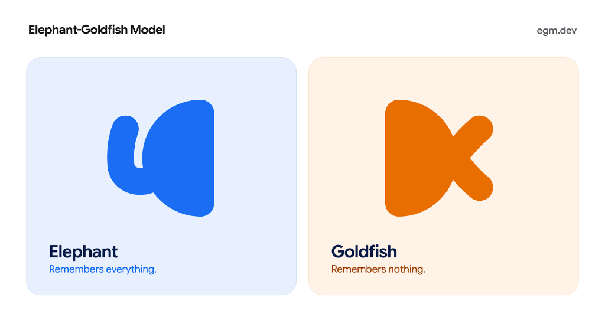
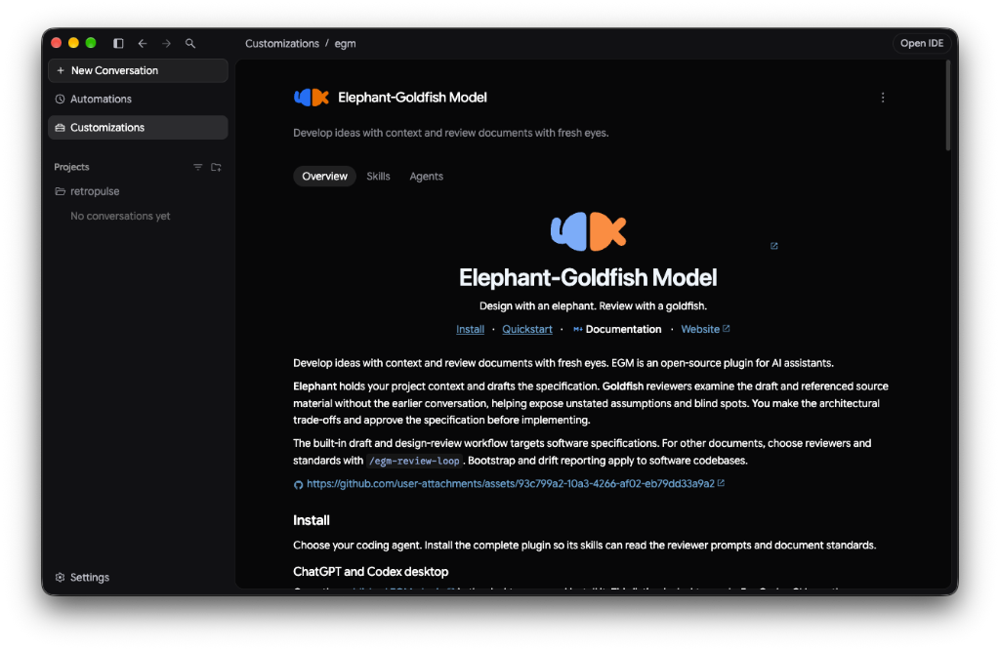
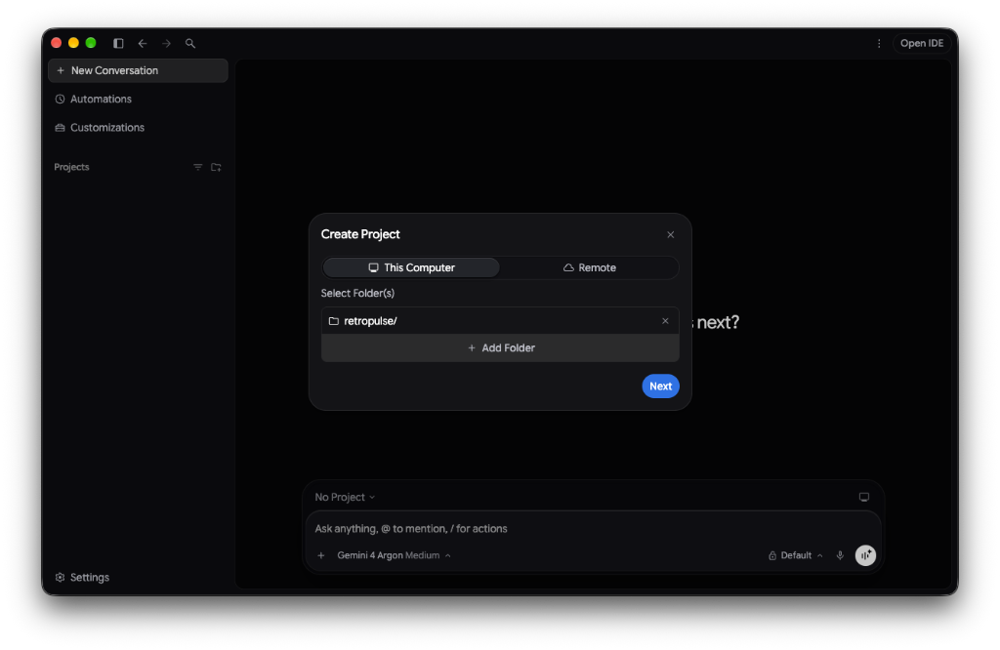

Welcome to the hands-on workshop on Spec-Driven Development (SDD) with Google Antigravity and the Elephant-Goldfish Model (EGM).

Instead of unstructured “vibe coding” (prompting an AI to write code directly and hoping for the best), Spec-Driven Development treats your technical specification as the single source of truth. In this workshop, you will take SDD a step further using the open-source Elephant-Goldfish Model (EGM) plugin:
docs/designs/retropulse.md)—without writing production code.You will build RetroPulse, a lightweight Sprint Retrospective Board web application from a completely empty folder:
uv and FastAPI (main.py) with in-memory state.static/index.html) built with vanilla HTML, CSS, and JavaScript (Went Well, To Improve, Action Items) with card creation and upvoting.concepts_brief.md using /egm:egm-brainstorm.uv + FastAPI) and document rejected alternatives in docs/designs/retropulse.md using /egm:egm-draft./egm:egm-review./egm:egm-drift-report.uv installed locally.gcloud CLI installed.You will start completely from scratch in an empty folder—no starter repository, no pre-written code, and no manual terminal setup required.
Open the Antigravity App, click Customizations in the left sidebar, search for egm, select Elephant-Goldfish Model, and click Install.

retropulse.retropulse folder you created (+ Add Folder), and click Next.
Your new project session now has the /egm:* skills (egm-brainstorm, egm-draft, egm-review, egm-resolve, and egm-drift-report) and Goldfish reviewer subagents ready to use.
In EGM, you never ask the agent to write code right away. Instead, you start an upstream ideation session with the Elephant using /egm:egm-brainstorm.
Copy and paste Prompt 1 into the Antigravity chat:
/egm:egm-brainstorm Build a Sprint Retro Board web application ("RetroPulse") where team members can post cards into three columns ("Went Well", "To Improve", "Action Items") and upvote cards.Because the retropulse folder is completely empty, the Elephant does not yet know your target users, constraints, or which tech stack you want to use (uv + FastAPI vs. Golang or Node.js).
The Elephant will interview you in chat about your problem statement, users, constraints, non-goals, success metrics, and author name.
Copy and paste Prompt 2 to answer all of the Elephant's clarifying questions and declare your architecture in one turn:
Here are our answers and architectural constraints:
- Author: Workshop Attendee
- Problem & Existing Alternatives: Today our single engineering team (up to 20 people) uses ad-hoc shared docs because SaaS tools (EasyRetro, Miro) require external accounts and store sprint feedback off-machine. We need a zero-login, strictly local ephemeral board with zero external data residency.
- Usage & Concurrency Model: A single shared board accessed by teammates over HTTP (`http://localhost:8000` or a shared local URL) backed by server memory—using standard synchronous REST `fetch` requests on load and user actions (no WebSockets or Server-Sent Events needed for v1).
- Voting & Card Lifecycle: Each card has `id`, `text` (non-empty, max 280 characters), `category` ("Went Well", "To Improve", or "Action Items"), and `votes` (starting at 0, unlimited anonymous `+1` clicks with no per-user vote cap or session tracking). Cards are immutable once posted—no editing, deleting, or converting/moving cards between columns.
- Tech Stack & Persistence: Python managed with `uv`, using `fastapi` and `uvicorn` (chosen over Golang or Node.js for rapid Pydantic schema validation), serving a single-page frontend in `static/index.html` built with vanilla HTML, CSS, and JavaScript. Storage is strictly an in-memory Python list/dict in `main.py` (no SQLite, Postgres, or external databases; resetting on server restart is desired).
- Out of Scope & Success Metric: No user authentication, no author attribution on cards, and no multiple boards/rooms. Users can open `http://localhost:8000`, post cards in any of the 3 columns, and upvote cards with sub-100ms response time.After reading your constraints, the Elephant summarizes the anchored hypothesis and presents a single-select confirmation gate in chat:
Review with Goldfishes.concepts_brief.md to your workspace.The Elephant will highlight 2–3 edge cases raised by the Goldfish reviewers (such as stale board visibility without push transport, single-worker process & ID collisions, or jumping cards during rapid voting).
Copy and paste Prompt 3 to align on those edge cases and finalize the brief:
Keep the scope strictly minimal for v1 with these decisions:
- API Routes & Board Sync: Lock in `GET /` (serves `static/index.html`), `GET /api/cards`, `POST /api/cards`, and `POST /api/cards/{card_id}/upvote`. Fetch `GET /api/cards` on page load, card creation, and upvote, relying on standard browser refresh for passive readers (no background polling timers).
- Process & ID Model: Run Uvicorn strictly as a single worker process (`--workers 1`) and use sequential integer IDs (`1, 2, 3...`), accepting stale browser tabs if the ephemeral server restarts.
- Ordering, Validation & Memory: Render cards in stable creation order (no dynamic re-sorting on `+1` clicks so cards never jump beneath the cursor), enforce category validation ("Went Well", "To Improve", "Action Items") and whitespace-stripped 1..280 character validation in Pydantic (rejecting empty/whitespace strings with HTTP 422), and skip hard card-count caps for a trusted 20-person team.
Please record these decisions in `concepts_brief.md` and finalize the brief.When the handoff options appear, click Proceed to egm-draft (Initialize formal design document) if shown as a button, or proceed directly to Step 3 and run /egm:egm-draft.
Now that concepts_brief.md is saved on disk, you will use /egm:egm-draft to turn the brief into a formal engineering specification (docs/designs/retropulse.md).
If you did not already launch egm-draft from a handoff button at the end of Step 2, copy and paste Prompt 4 into the Antigravity chat:
/egm:egm-draftThe Elephant automatically detects and reads concepts_brief.md from disk and asks for confirmation to start drafting. If prompted in chat to confirm, reply:
Yes, proceed with drafting from concepts_brief.md.Instead of dumping a massive document into chat, /egm:egm-draft writes design_draft.md section by section, pausing after each checkpoint so you remain in control.
At each checkpoint, click Review (or design_draft.md) to inspect what was written to disk, then select option 1. Approve [Section] and proceed to next section and click Submit:
Overview & Goals:## Overview, ## The Problem, ## Goals, ## Non-Goals, and ## Critical User Journeys (CUJs) (verify card deletion and card authors are listed under Non-Goals).Technical Plan:## Technical Plan (Architecture), documenting the FastAPI endpoints (GET /api/cards, POST /api/cards, POST /api/cards/{card_id}/upvote), the Pydantic model (max_length=280), in-memory storage, and static/index.html.Alternatives Considered:## Alternatives Considered, permanently documenting why Golang / Node.js and SQLite / external databases were rejected in favor of Python (uv + FastAPI) and in-memory state.Detailed Implementation:## Detailed Implementation Plan, listing every exact file to create (pyproject.toml, main.py, static/index.html) along with the ### Verification Plan (uv commands)—still with no production code written yet.docs/designs/After the fourth checkpoint, the Elephant reconciles design_draft.md against concepts_brief.md and asks where to save the finalized specification. Select Save to detected directory: docs/designs/ if shown as a button, or reply in chat:
Save the finalized specification to docs/designs/retropulse.md.Your specification is now saved on disk at docs/designs/retropulse.md.
Why shouldn't the Elephant just review its own specification? Because the Elephant carries the entire conversation history and hidden biases from Steps 2 and 3.
Now you will invoke /egm:egm-review to spawn stateless Goldfish subagents with zero conversation history. They only see docs/designs/retropulse.md.
/egm:egm-reviewCopy and paste Prompt 5 (adjusting the filename if your spec was saved under a slightly different name inside docs/designs/):
/egm:egm-review docs/designs/retropulse.mdBecause this is a brand-new project with no existing source code files yet, when the agent asks if you want to provide additional GoldfishContext files, copy and paste Prompt 6:
Proceed with no additional context files.EGM presents a 4-option preset menu:
For this 1-hour workshop, select:
Implementation plan only (evaluate design for implementation readiness)When the Goldfish review completes, it writes implementation_readiness_report.md and presents a checkpoint menu:
2. Resolve findings with agent (evaluate findings, propose fixes, and apply approved edits) and click Submit.goldfish_review_report.md. Copy and paste the following reply to apply all proposed fixes to your spec:auto acceptOnce the fixes are applied (if asked how to proceed next), select Conclude review and finalize document.
Look at your workspace: you now have a verified, self-contained specification in docs/designs/retropulse.md that defines uv, fastapi, uvicorn, main.py, static/index.html, the API routes, and the data validation rules (max_length=280).
Because everything is documented in docs/designs/retropulse.md, you do not need to repeat your tech stack or requirements in the implementation prompt.
Copy and paste Prompt 7 into the Antigravity chat:
Implement docs/designs/retropulse.md and start the local server on port 8000 with --reload.Watch what Antigravity does autonomously from that single line:
docs/designs/retropulse.md.uv (pyproject.toml) and installs fastapi and uvicorn.main.py with the in-memory store, Pydantic validation (max_length=280), and REST endpoints.static/index.html with the 3-column layout (Went Well, To Improve, Action Items).uv run uvicorn main:app --host 0.0.0.0 --port 8000 --reload.+1) button on a card and verify the counter increments immediately.In real-world engineering, specifications often rot the moment someone makes a quick manual edit in the code or “vibe-codes” an urgent feature in a new chat session without updating the design doc.
EGM solves this with /egm:egm-drift-report, which audits your checked-in specifications (docs/designs/) against your actual source code.
First, verify that your v1 implementation matches docs/designs/retropulse.md. Copy and paste Prompt 8:
/egm:egm-drift-report docs/designs/Open the generated {YYYY-MM-DD}_DRIFT_REPORT.md file. Because the app was built strictly from docs/designs/retropulse.md, it reports:
No drift detected.Let's simulate a developer silently changing a validation rule in the code:
main.py in the Antigravity App file editor.280) in the Pydantic model or validation logic.280 to 50 and save main.py.Now let's simulate an urgent feature request where a developer skips SDD and prompts the AI directly in a new chat:
+ New Conversation (or open a new chat thread) in the Antigravity App.In main.py and static/index.html, add an optional "author" field (defaulting to "Anonymous") to every card and display it on the card UI, and add a "Clear Board" button in the UI backed by a DELETE /api/cards endpoint.Refresh http://localhost:8000 in your browser—you will see the new Author field and the Clear Board button working in the UI.
/egm:egm-drift-report to Catch Both Drifts!Now run the drift detector by copying and pasting Prompt 10:
/egm:egm-drift-report docs/designs/Open {YYYY-MM-DD}_DRIFT_REPORT.md! EGM compares docs/designs/retropulse.md against main.py and static/index.html and catches both divergences red-handed:
main.py enforces a 50-character limit on card text instead of the 280-character limit specified in docs/designs/retropulse.md.main.py and static/index.html include an undocumented author field and a DELETE /api/cards (“Clear Board”) endpoint that contradicts the v1 specification's Non-Goals.In EGM, when drift is detected, the human architect decides whether to revert the code or update the spec. Here, we want to fix the accidental 50-character bug back to 280, while officially adopting the new author and Clear Board features in the specification.
Copy and paste Prompt 11:
Reconcile the drift between docs/designs/retropulse.md and the codebase:
1. In main.py (and static/index.html if applicable), restore the maximum card text length back to 280 characters to match the specification.
2. Update docs/designs/retropulse.md to officially document the optional "author" field (default "Anonymous") and the DELETE /api/cards "Clear Board" feature.
3. Re-run /egm:egm-drift-report docs/designs/ to verify that zero drift remains.Inspect {YYYY-MM-DD}_DRIFT_REPORT.md—your specification and codebase are once again 100% synchronized (No drift detected.)!
To deploy RetroPulse following Google Cloud Run security best practices, we will:
southamerica-east1 region using a dedicated, least-privilege Service Account (never the default Compute Engine service account).Copy and paste Prompt 12 into Antigravity (replacing YOUR_GCP_PROJECT_ID if you are deploying to Google Cloud):
Update docs/designs/retropulse.md and the project to include a production multi-stage Dockerfile optimized for size (using python:3.11-slim-bookworm with uv as the builder stage and gcr.io/distroless/python3-debian12:nonroot as the final runtime stage, listening on PORT=8080).
If I provide a Google Cloud Project ID (YOUR_GCP_PROJECT_ID), give me the exact gcloud commands to:
1. Create a dedicated least-privilege service account `retropulse-sa`.
2. Build and deploy the container to Cloud Run in `southamerica-east1` using `--service-account=retropulse-sa@YOUR_GCP_PROJECT_ID.iam.gserviceaccount.com`.You have built a complete web application from scratch using Spec-Driven Development (SDD) in Antigravity and the Elephant-Goldfish Model (EGM)—brainstorming with the Elephant, reviewing with stateless Goldfish subagents, building from a single source-of-truth specification, and catching code drift automatically with /egm:egm-drift-report.